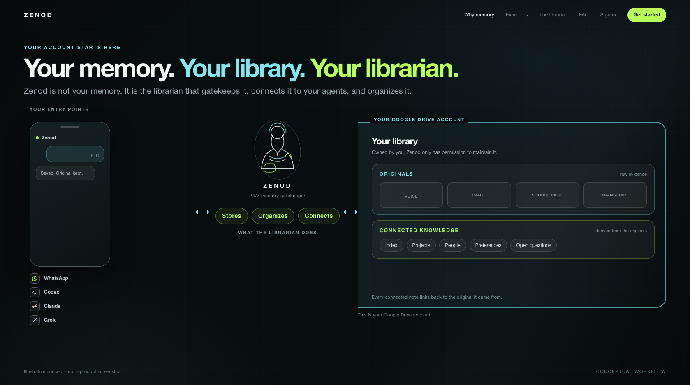
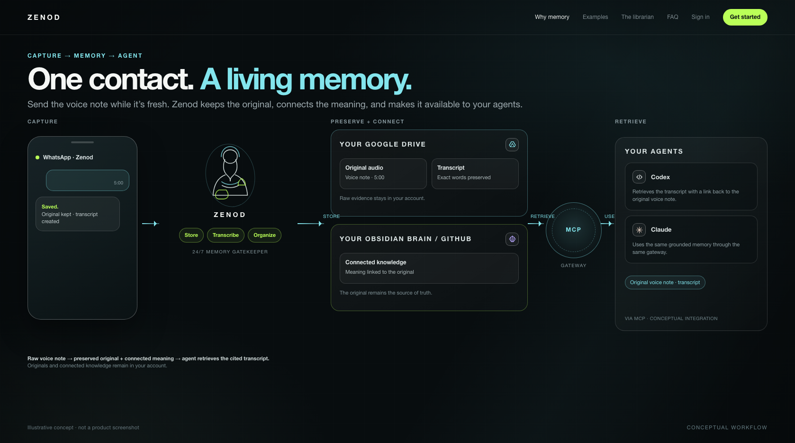
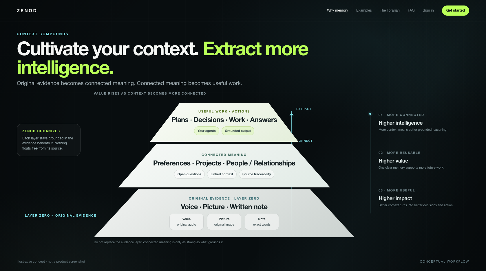
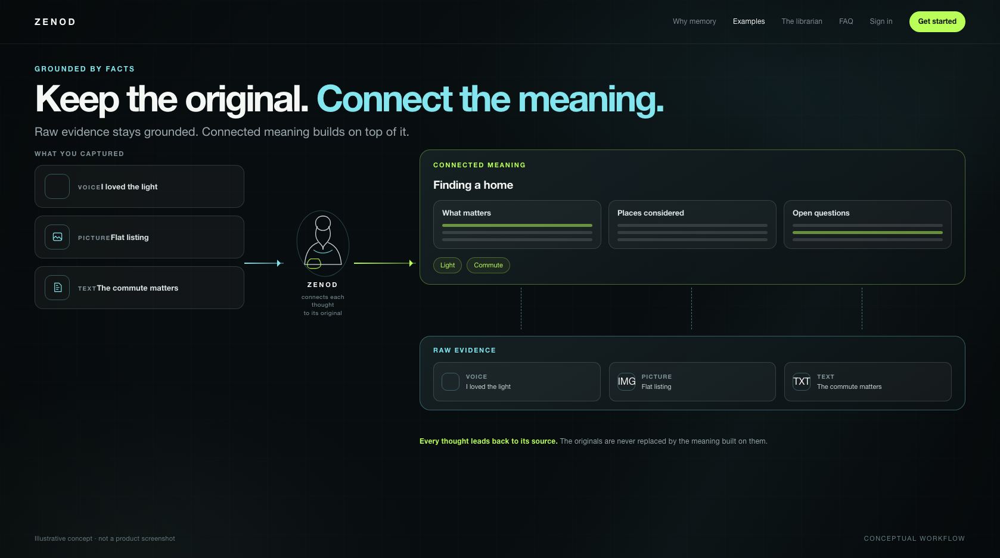
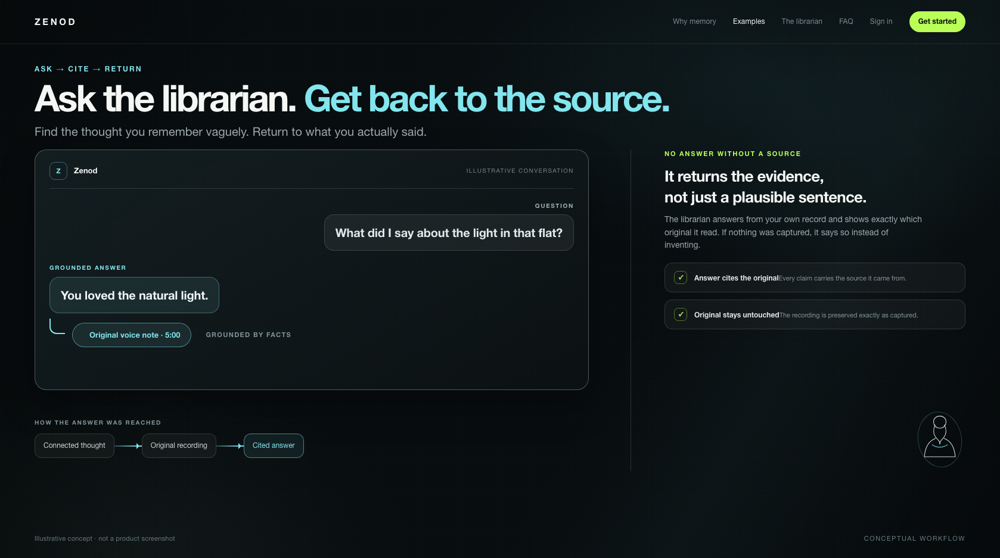
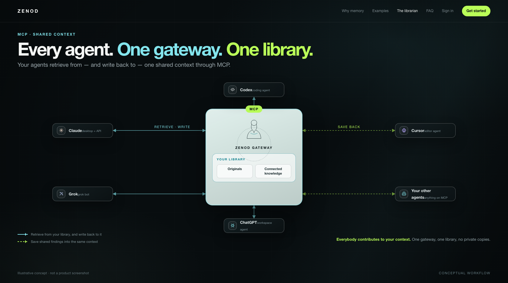
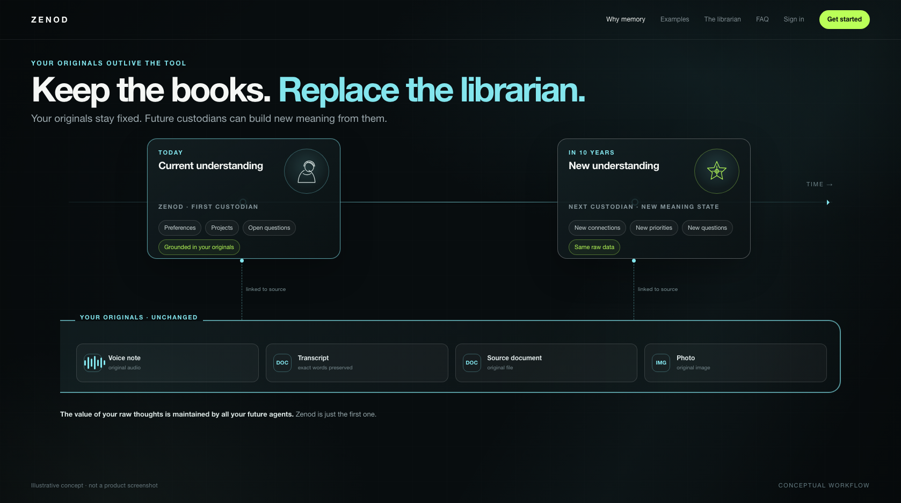
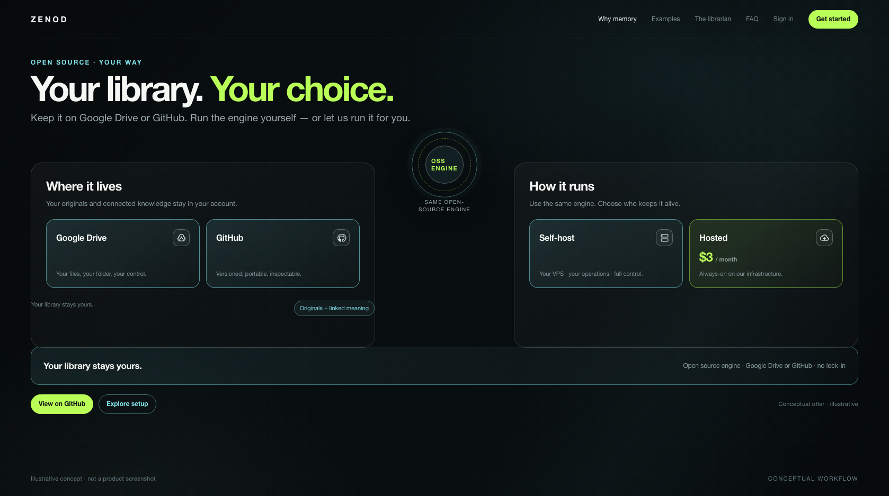

1. Your memory. Your library. Your librarian.
Multiple entry points; the user-owned account holds originals and connected knowledge; Zenod stores, organizes and connects.

2. One contact. A living memory.
Voice note → Zenod → Google Drive original + Obsidian/GitHub connected knowledge → agent retrieves the cited transcript through MCP.

3. Cultivate your context. Extract more intelligence.
Original evidence → connected meaning → useful work and action, with value and intelligence rising upward.

4. Keep the original. Connect the meaning.
Voice, picture and text stay as raw evidence while the connected meaning layer grows above them, with source links back to each original.

5. Ask the librarian. Get back to the source.
Ask a vague question, receive a grounded answer, and return to the exact original recording.

6. Every agent. One gateway. One library.
Codex, Claude, Grok and other agents share one MCP gateway into the same user-owned library; retrieve and save are both visible.

7. Keep the books. Replace the librarian.
The originals remain unchanged while future custodians create new meaning states from the same raw data over time.

8. Your library. Your choice.
Google Drive or GitHub; self-host or hosted at $3 per month; the open-source engine stays the same and the library stays yours.
